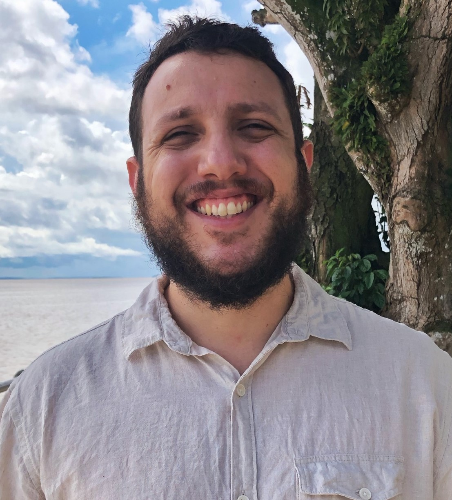
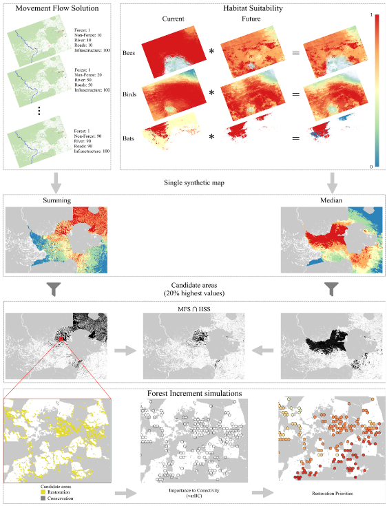

About Me
I am an biodiversity data scientist who spends a lot of time thinking about tropical ecosystems: how they respond to global changes and how we can make better decisions about their future. Somewhere between field notebooks in the Amazon and lines of code in R, I realised that understanding biodiversity is not only about describing species, but about anticipating change. And acting on it.
My work sits at the interface of ecology, spatial modelling and environmental decision-making. I use satellite imagery, field data, and statistical models to understand how global change, land-use transformation and habitat degradation reshape biodiversity and ecosystem functioning. In simple terms, I try to translate complex ecological patterns into information that can guide conservation, restoration, and sustainable management - ideally before irreversible thresholds are crossed.
I trained as a biologist in Brazil and now work as a Senior Research Associate in the UK, building collaborations across institutions in both countries. I am particularly committed to advancing biodiversity indicators that go beyond carbon alone, integrating species distributions, ecological traits and ecosystem functions into spatial planning frameworks. Through large collaborative networks in the Amazon, I aim to ensure that tropical ecosystems, often underrepresented in global datasets, remain central to global environmental science.
I enjoy working at the boundary between science and policy, and I care deeply about the integrity of both. Good data matters. Clear models matter. But so does listening to local knowledge, to students, to collaborators. In the end, I am motivated by one question: how can ecological science meaningfully inform decisions that shape landscapes and livelihoods?
For more details about my skills, publications, and engagement activities please access my and my .
Profile and Portfolio
 My research trajectory began during my undergraduate scientific initiation projects, where I worked on population genetics of Amazonian birds. I estimated nucleotide and haplotypic diversity, gene flow patterns, and [naively attempted to calculate] effective population sizes, using coalescent-based approaches to understand how landscape structure shapes genetic variation.
 During my Master’s degree, I moved into integrative taxonomy, combining molecular phylogenies, morphometric analyses, vocal trait assessment, and multivariate statistics to delimit species boundaries. This work led to the description of a new Amazonian bird species, Myrmotherula oreni (Bamboo Antwren), published in a special volume of the Handbook of the Birds of the World. This experience has strengthened my interest in how evolutionary history and ecological specialisation intersect.
During my Master’s degree, I moved into integrative taxonomy, combining molecular phylogenies, morphometric analyses, vocal trait assessment, and multivariate statistics to delimit species boundaries. This work led to the description of a new Amazonian bird species, Myrmotherula oreni (Bamboo Antwren), published in a special volume of the Handbook of the Birds of the World. This experience has strengthened my interest in how evolutionary history and ecological specialisation intersect.
 My PhD expanded this perspective to macroevolution and biogeography. I reconstructed dated phylogenies using molecular clocks, conducted ancestral area reconstructions, and coupled species distribution models with palaeoclimatic hindcasts to examine how past climate oscillations influenced diversification across the Amazon. It was here that the central role of climate in shaping biodiversity patterns became undeniable.
My PhD expanded this perspective to macroevolution and biogeography. I reconstructed dated phylogenies using molecular clocks, conducted ancestral area reconstructions, and coupled species distribution models with palaeoclimatic hindcasts to examine how past climate oscillations influenced diversification across the Amazon. It was here that the central role of climate in shaping biodiversity patterns became undeniable.
 In my postdoctoral positions, I shifted towards forecasting future change. I used species distribution models to assess climate-driven range shifts in birds, bees, and other taxa, some of these works were later cited by the UN FAO. I also developed spatial multi-criteria frameworks to prioritise conservation and restoration areas, integrating ecological data with strategic planning tools.
In my postdoctoral positions, I shifted towards forecasting future change. I used species distribution models to assess climate-driven range shifts in birds, bees, and other taxa, some of these works were later cited by the UN FAO. I also developed spatial multi-criteria frameworks to prioritise conservation and restoration areas, integrating ecological data with strategic planning tools.
 More recently, as part of the Rede Amazônia Sustentável, I have led spatially explicit modelling that integrates satellite data, long-term field observations and counterfactual scenarios to quantify the cost-effectiveness of conservation interventions. These works contributed to receiving the Ramboll Foundation Award on Biodiversity and to securing major restoration funding through the GCBC–DEFRA programme. I now collaborate closely with the Environment Secretariat of Pará to measure the recovery of biodiversity and ecosystem functions in naturally regenerating secondary forests, translating science into operational guidance for restoration at scale.
More recently, as part of the Rede Amazônia Sustentável, I have led spatially explicit modelling that integrates satellite data, long-term field observations and counterfactual scenarios to quantify the cost-effectiveness of conservation interventions. These works contributed to receiving the Ramboll Foundation Award on Biodiversity and to securing major restoration funding through the GCBC–DEFRA programme. I now collaborate closely with the Environment Secretariat of Pará to measure the recovery of biodiversity and ecosystem functions in naturally regenerating secondary forests, translating science into operational guidance for restoration at scale.
Publications
Contact
If you have any questions or would like to discuss collaborative opportunities, please feel free to reach out.